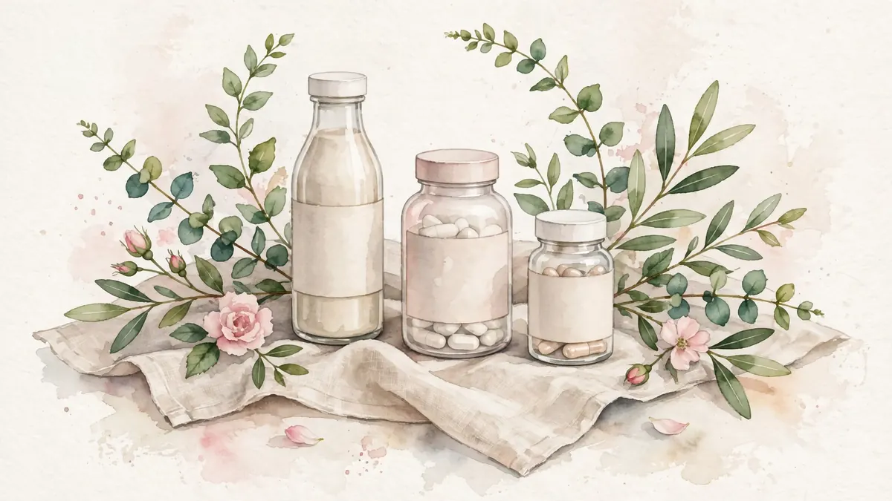

トップ ＞ インナーケア・サプリ ＞ 『無添加』『フリー』の言葉の表示の見方
『無添加』『フリー』の言葉の表示の見方

パッケージでよく見かける「無添加」「○○フリー」という言葉。これらは短くて印象に残りやすい言葉ですが、読み方を知らないと、意味を取り違えることがあります。この記事では、この2つの言葉の表示の見方を整理します。
「無添加」は、対象とセットで読む言葉
「無添加」という言葉だけでは、「何が入っていないのか」が分かりません。意味が定まるのは、「保存料無添加」「着色料は使用していません」のように、対象が一緒に書かれている場合です。パッケージの表面に大きな文字で「無添加」とあっても、対象の併記がどこかにあるはずなので、まずそれを探してください。
対象の書き方は、表面のキャッチコピーの近くか、裏面の説明文の中にあります。対象が見つからない場合は、その言葉だけでは判断材料にしないのが無難です。販売者の公式ページや窓口で、対象を確認することもできます。
原材料名と照らし合わせて、裏づける
言葉の確認の仕上げは、原材料名と添加物の欄との照らし合わせです。「○○フリー」と書かれていれば、原材料名の中にその名前がないことを自分の目で確認できます。この裏づけの作業をすると、言葉が単なる印象ではなく、表示に基づいた情報になります。
なお、「フリー」の表示は「その成分が含まれていない」という案内であり、それ以上の意味を持つものではありません。含まれていないことと、自分の避けたいものが一致しているかどうかが、判断のポイントです。人によって避けたいものは違うため、言葉の一般的な印象ではなく、対象の一致で選んでください。
言葉は入口、判断は表示で
「無添加」「フリー」は、商品を探すときの入口としては便利な言葉です。ただ、最終的な判断は、対象の併記と原材料名という、表示そのものに基づいて行うのが基本です。
私は買い物のとき、目立つ言葉を見たら、裏返して原材料名を見ることをセットにしています。言葉と表示の両方を読む習慣がつくと、パッケージの印象に流されにくくなります。
「不使用」という書き方との違い
似た表現に、「○○は使用していません」という書き方があります。これは対象が文の中に含まれているため、「無添加」という言葉だけの場合より、意味が読み取りやすい書き方です。パッケージの言葉を見るときは、このように「対象が文で示されているか」を基準にすると、読み方の精度が上がります。
公的な案内でも、表示の言葉の意味についての解説が公開されています。言葉の解釈に迷ったときは、そうした公的な情報に当たる姿勢も大切です。私は、目立つ言葉のある商品ほど、裏面の表示を丁寧に読むことにしています。言葉はあくまで入口であり、中身の確認は原材料名と添加物の欄で行うもの。この順番を守れば、言葉の印象だけで選ぶことはなくなります。
家族と買い物をするときも、この読み方を共有しておくと、「無添加って書いてあったから」という理由だけで選ぶことが減ります。何が入っていないのかを一緒に確認する会話は、そのまま表示を読む練習になります。
言葉の表示は、法律や業界のルールの中で使われています。「無添加」という言葉自体が、すべての添加物が入っていないことを意味するとは限りません。だからこそ、対象の併記を確認する読み方が欠かせないのです。
買い物の場で迷ったら、表面の言葉の大きさではなく、裏面の表示の具体性で比べてください。対象が明記され、原材料名で裏づけられる商品は、少なくとも表示の読み方に迷いが残りません。言葉は商品の入口、表示は中身の案内です。この読み分けができると、買い物の判断軸がぶれにくくなります。次に同じ言葉を見たときも、同じ手順で確かめられます。
セラフィナ「『無添加』は、何が入っていないのかまで読んで初めて意味が分かる言葉だね」

セラフィナ｜美容の道具箱の案内役
「量と表示が分かれば、美容は失敗しない。」——セラフィナと白猫のモコが、買う前のチェックポイントを案内します。綺麗になりたい気持ちに正直に、でも表示は冷静に読むのが、このサイトの約束です。